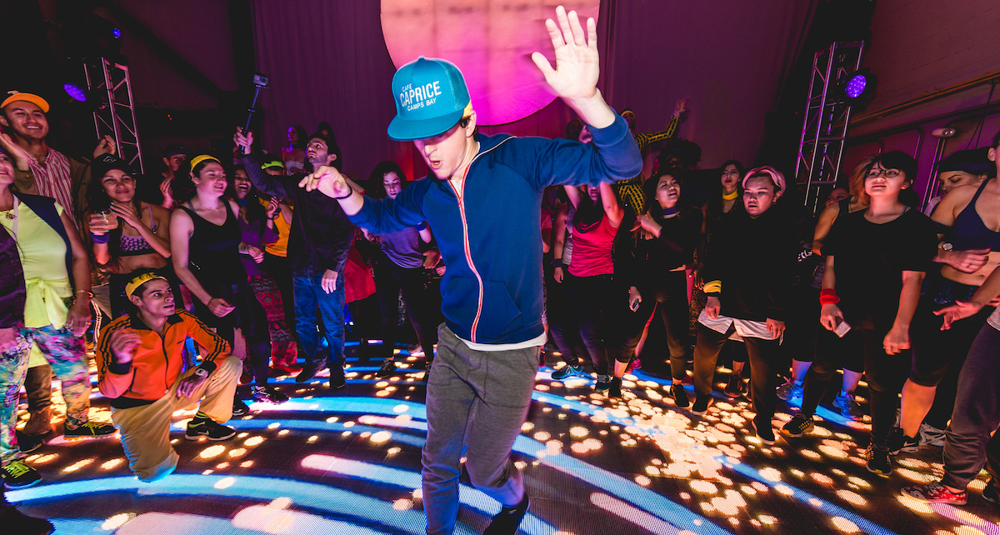

Cover & guitar: Bashir Payenda,
Gratitude song by Amin Toofani covered by me full version🎶❤
Posted by Bashir Khan on Friday, March 1, 2019
Cover: Bashir Payenda,
Camera: Nooruddin Payenda
Ahmad zahir song guitar cover🎶🎸❤🎸🎶
Posted by Bashir Khan on Wednesday, December 5, 2018